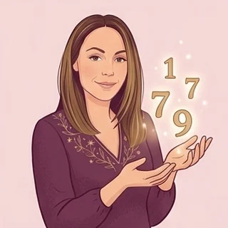

Gratuit · sans inscription
Ta Matrice de destin
Ta date de naissance dessine une grille de neuf nombres, chacun lié à une facette de toi. Et parce que rien de ce qui te compose ne vient de nulle part, Genesolia va plus loin : ce que cette grille laisse voir de ta lignée.
D'où vient cette méthode ?
Ton prénom et ta date : en quelques secondes, je te montre ta grille, et ce qu'elle laisse deviner de ta lignée.
Comment est calculée ta grille
On extrait tous les chiffres de ta date de naissance (jour, mois, année). Les zéros sont ignorés : ils ne remplissent aucune case. Pour le 12/05/1990, ça donne : 1, 2, 5, 1, 9, 9.
On calcule ton chemin de vie en additionnant tous ces chiffres, puis en réduisant le total à un seul chiffre (1+2+0+5+1+9+9+0 = 27, soit 2+7 = 9). Ses chiffres rejoignent eux aussi le compte.
Chaque chiffre de 1 à 9 remplit une case d'une grille à neuf cases : plus un chiffre revient souvent, plus sa case est « marquée ». Une case vide n'est pas un manque, juste une clé à apprivoiser plutôt qu'à exploiter.
Et les nombres maîtres (11, 22, 33) ? Si l'addition du chemin de vie donne 11, 22 ou 33 avant toute autre réduction, on le garde tel quel plutôt que de le réduire une fois de plus (11 ne devient pas 2). C'est la règle classique en numérologie, et c'est celle que Genesolia applique ici. Ses deux chiffres (1 et 1, par exemple) rejoignent quand même la grille un par un.
C'est une version que Genesolia a adaptée à sa façon, dans l'esprit du carré pythagoricien utilisé par plusieurs méthodes de matrice de destin, mais pensée pour se relier ensuite à ta lignée plutôt qu'à toi seul·e.
Lecture symbolique, pour t'aider à réfléchir. Elle ne prédit pas l'avenir et ne remplace pas un avis médical, psychologique ou professionnel.
Questions fréquentes
Comment est calculée la Matrice de destin ?
Les chiffres de ta date de naissance sont comptés un par un, puis ton chemin de vie vient s'ajouter à ce compte. Chaque chiffre de 1 à 9 remplit une case d'une grille à neuf cases : sa fréquence colore la clé qui lui est associée.
Quelle est la différence entre la Matrice de destin et un thème numérologique ?
Le thème numérologique détaille des nombres précis (chemin de vie, expression, cycles). La Matrice de destin les réunit dans une grille visuelle à neuf cases, pour une lecture d'ensemble plus rapide.
La Matrice de destin est-elle fiable ?
C'est une lecture symbolique, pensée pour t'aider à réfléchir sur toi et sur ta lignée. Elle ne prédit pas l'avenir et ne remplace pas un avis médical, psychologique ou professionnel.
Pourquoi la Matrice de destin parle-t-elle de ma lignée ?
La case 9 de la grille classique correspond à la mémoire : Genesolia a choisi de la relier à ce qui se transmet dans une famille, pour prolonger la lecture au-delà de la seule personne.
Que se passe-t-il si mon chemin de vie est un nombre maître (11, 22, 33) ?
Il est gardé tel quel plutôt que réduit une seconde fois, comme le veut la règle classique en numérologie. Ses deux chiffres rejoignent quand même la grille, un par un.
À lire aussi
Ton thème numérologique complet
Chemin de vie, expression, cycles et défis : l'autre lecture par les nombres.
D'où vient la Matrice de destin ?
Une méthode récente, son histoire, et son lien avec la méthode des deux cycles.
Dessiner mon arbre familial
Pour voir, page après page, ce qui se répète dans ta lignée.